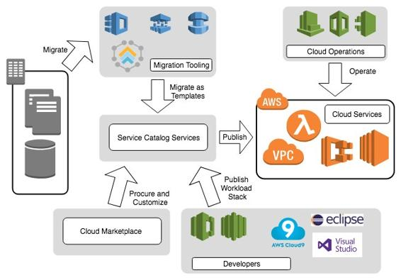

Marketplace and service catalogs
Cloud vendors often have a service catalog feature that allows for pre-created application stacks or complex solutions to be stored and deployed when required by users with the right permissions. This approach, when combined with the marketplace, offers a powerful way to allow the service design teams to choose the right software, stage it in the catalog location, and either deploy it or have the operations team deploy it following company guidelines. The following diagram shows where the marketplace and a service catalog offering might fit into an organization's procurement strategy:

Marketplace and service catalog offering
In this example, the service catalog is acting as an intermediary location for the company to publish customer development patterns, procure cloud marketplace software, or migrate on-premises workloads before being pushed to the target cloud landing zone.